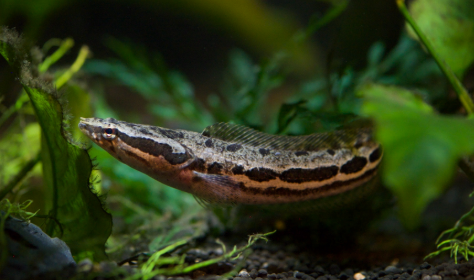

Systématique
- Ordre : Anabantiformes
- Famille : Channidae
- Genre : Parachanna
- Espèce : P. insignis
- Auteur : Sauvage, 1884

Parachanna insignis est un poisson prédateur originaire du bassin du Congo en Afrique centrale. Membre de la famille des poissons à tête de serpent (Channidae), il se distingue des espèces asiatiques (Channa) par des caractéristiques crâniennes et la structure de son organe respiratoire accessoire. Son corps est très allongé, cylindrique, avec une tête large et aplatie rappelant celle d'un serpent.
Il peut atteindre une taille impressionnante de 45 à 55 cm en captivité. Sa livrée est constituée de motifs complexes : une série de grandes ocelles ou taches circulaires sombres le long des flancs, entourées de zones plus claires sur un fond brun-cuivré à olivâtre. Les nageoires dorsale et anale sont très longues, s'étendant sur une grande partie du corps.
C'est un prédateur à l'affût, solitaire à l'état adulte sauf en période de reproduction. Parachanna insignis possède un tempérament calme mais peut devenir extrêmement rapide lorsqu'il attaque une proie. Il dispose d'un organe labyrinthiforme lui permettant de respirer l'air atmosphérique, ce qui lui permet de survivre dans des eaux très peu oxygénées.
En aquarium, il est territorial et ne tolère généralement pas ses congénères à moins d'être maintenu en couple formé dans un volume très important. Toute espèce plus petite sera considérée comme une proie potentielle. C'est un excellent sauteur ; le bac doit être parfaitement couvert et sans aucun interstice. Il préfère les zones sombres et les nombreuses cachettes formées par des racines ou des tubes.
Mode : Ovipare, pondeur sur substrat ou en pleine eau avec soins parentaux.
Le couple surveille rigoureusement les œufs qui flottent souvent à la surface ou sont regroupés dans une zone protégée. Contrairement à certains Channa asiatiques, les Parachanna ne sont pas des incubateurs buccaux. Les deux parents protègent férocement la progéniture contre tout intrus.
Les alevins naissent avec un sac vitellin et, une fois celui-ci résorbé, ils se déplacent en nuage compact sous la surveillance des parents. Ils consomment alors de la micro-faune, puis rapidement des larves d'insectes et de petits crustacés. En captivité, la reproduction nécessite un calme absolu et un bac de très grande dimension pour éviter que le stress ne pousse les parents à dévorer le frai.
Dimorphisme sexuel : Très peu marqué. Les femelles matures ont tendance à avoir un corps plus massif et un abdomen plus arrondi. L'examen des pores génitaux est souvent la seule méthode fiable pour une identification certaine, ou l'observation du comportement lors de la formation d'un couple.
Espérance de vie : 10 à 15 ans, voire plus, dans des conditions de maintenance optimales.
Parachanna insignis fréquente les eaux stagnantes ou à courant très lent du bassin du fleuve Congo et de l'Ogooué. On le trouve principalement dans les zones de forêts inondées, les marécages et les rivières secondaires riches en débris végétaux et en bois immergé.
L'eau de son habitat est généralement acide à neutre, très douce et souvent teintée de tanins (eaux noires). Ces milieux sont caractérisés par une végétation dense en bordure, offrant une multitude d'affûts pour chasser les poissons et les gros invertébrés aquatiques.
Répartition

Origine naturelle :
- Afrique Centrale : Bassin du fleuve Congo (République Démocratique du Congo, Congo) et fleuve Ogooué (Gabon).
- Localité type : Congo.
L'espèce est largement répartie mais reste peu commune dans le commerce aquariophile comparée à P. obscura. Elle n'est pas considérée comme menacée actuellement.
Paramètres de maintenance
Température : 24 à 28 °C.
pH : 5,5 à 7,0 (préfère une eau légèrement acide).
GH : 2 à 10 °dGH (eau douce).
Courant : Faible à nul.
Volume conseillé : Minimum 600-800 L pour un individu seul ou un couple, en raison de sa taille et de sa pollution organique. Bac de 200 cm de façade minimum.
Régime alimentaire
Régime : Carnivore strict (piscivore).
En milieu naturel, il se nourrit de poissons, de batraciens et de gros crustacés.
En aquarium, il doit être nourri avec des aliments carnés variés : poissons entiers, crevettes, moules, chair de poisson blanc, vers de terre. L'accoutumance aux granulés pour carnivores est possible mais demande du temps. Il ne faut jamais nourrir avec de la viande de mammifère ou de volaille.